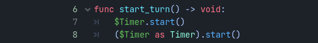

Kiểu tĩnh trong GDScript
Trong bài hướng dẫn này, bạn sẽ học:
cách dùng kiểu tĩnh trong GDScript;
rằng kiểu tĩnh có thể giúp bạn tránh lỗi;
rằng kiểu tĩnh cải thiện trải nghiệm của bạn với trình chỉnh sửa.
Việc dùng tính năng ngôn ngữ này ở đâu và như thế nào hoàn toàn tùy thuộc vào bạn: bạn có thể chỉ dùng nó trong một số file GDScript quan trọng, dùng ở mọi nơi, hoặc hoàn toàn không dùng.
Kiểu tĩnh có thể được dùng cho biến, hằng số, hàm, tham số và kiểu trả về.
Sơ lược về kiểu tĩnh
Với kiểu tĩnh, GDScript có thể phát hiện nhiều lỗi hơn mà thậm chí không cần chạy mã. Ngoài ra, type hint cung cấp thêm thông tin cho bạn và đồng đội trong khi làm việc, vì kiểu của các đối số sẽ hiện ra khi bạn gọi một phương thức. Kiểu tĩnh cải thiện tính năng tự động hoàn thành của trình chỉnh sửa và tài liệu của script.
Giả sử bạn đang lập trình một hệ thống túi đồ. Bạn viết một lớp Item, rồi một lớp Inventory. Để thêm vật phẩm vào túi đồ, những người làm việc với mã của bạn phải luôn truyền một Item vào phương thức Inventory.add(). Với kiểu, bạn có thể bắt buộc điều này:
class_name Inventory
func add(reference: Item, amount: int = 1):
var item := find_item(reference)
if not item:
item = _instance_item_from_db(reference)
item.amount += amount
Kiểu tĩnh cũng mang lại các gợi ý hoàn thành mã tốt hơn. Bên dưới, bạn có thể thấy sự khác biệt giữa các gợi ý hoàn thành với mã kiểu động và mã kiểu tĩnh.
Có lẽ bạn đã từng gặp tình trạng không có gợi ý tự động hoàn thành sau dấu chấm:

Điều này là do mã động. Godot không thể biết bạn đang truyền giá trị kiểu gì vào hàm. Tuy nhiên, nếu bạn viết kiểu một cách tường minh, bạn sẽ nhận được tất cả phương thức, thuộc tính, hằng số, v.v. của giá trị đó:

Mẹo
Nếu bạn thích kiểu tĩnh, chúng tôi khuyên bạn bật cài đặt trình chỉnh sửa Text Editor > Completion > Add Type Hints. Bạn cũng nên cân nhắc bật một số cảnh báo bị tắt theo mặc định.
Ngoài ra, GDScript có kiểu cải thiện hiệu năng nhờ dùng các opcode được tối ưu khi kiểu của toán hạng/đối số được biết tại thời điểm biên dịch. Nhiều tối ưu GDScript khác đã được lên kế hoạch trong tương lai, chẳng hạn như biên dịch JIT/AOT.
Nhìn chung, lập trình có kiểu mang lại trải nghiệm có cấu trúc hơn. Nó giúp ngăn lỗi và cải thiện khả năng tự mô tả của script. Điều này đặc biệt hữu ích khi bạn làm việc theo nhóm hoặc trong một dự án dài hạn: các nghiên cứu cho thấy lập trình viên dành phần lớn thời gian để đọc mã của người khác, hoặc các script họ đã viết trước đây và đã quên. Mã càng rõ ràng và có cấu trúc thì càng nhanh hiểu, và bạn càng tiến nhanh hơn.
Cách dùng kiểu tĩnh
Để định nghĩa kiểu của một biến, tham số hoặc hằng số, hãy viết dấu hai chấm sau tên, tiếp theo là kiểu của nó. Ví dụ var health: int. Điều này buộc kiểu của biến luôn giữ nguyên:
var damage: float = 10.5
const MOVE_SPEED: float = 50.0
func sum(a: float = 0.0, b: float = 0.0) -> float:
return a + b
Godot sẽ cố suy luận kiểu nếu bạn viết dấu hai chấm nhưng bỏ qua kiểu:
var damage := 10.5
const MOVE_SPEED := 50.0
func sum(a := 0.0, b := 0.0) -> float:
return a + b
Ghi chú
Với hằng số, không có sự khác biệt giữa
=và:=.Bạn không cần viết type hint cho hằng số, vì Godot tự động đặt kiểu từ giá trị được gán. Nhưng bạn vẫn có thể làm vậy để ý định của mã rõ ràng hơn. Ngoài ra, điều này hữu ích với mảng có kiểu (như
const A: Array[int] = [1, 2, 3]), vì mặc định mảng không có kiểu sẽ được dùng.
Những gì có thể làm type hint
Dưới đây là danh sách đầy đủ những gì có thể dùng làm type hint:
Variant. Bất kỳ kiểu nào. Trong hầu hết trường hợp, điều này không khác mấy so với khai báo không có kiểu, nhưng giúp dễ đọc hơn. Khi làm kiểu trả về, nó buộc hàm phải trả về một giá trị một cách tường minh.(Chỉ kiểu trả về)
void. Cho biết hàm không trả về giá trị nào.Các lớp native (
Object,Node,Area2D,Camera2D, v.v.).Các enum toàn cục, native và enum có tên tùy chỉnh. Lưu ý rằng kiểu enum chỉ là một
int, không có gì đảm bảo giá trị thuộc tập giá trị của enum.Hằng số (kể cả hằng số cục bộ) nếu chúng chứa một lớp hoặc enum được preload.
Bạn có thể dùng bất kỳ lớp nào, kể cả các lớp tùy chỉnh của bạn, làm kiểu. Có hai cách để dùng chúng trong script. Cách thứ nhất là preload script bạn muốn dùng làm kiểu vào một hằng số:
const Rifle = preload("res://player/weapons/rifle.gd")
var my_rifle: Rifle
Cách thứ hai là dùng từ khóa class_name khi tạo script. Với ví dụ trên, file rifle.gd của bạn sẽ trông như sau:
class_name Rifle
extends Node2D
Nếu bạn dùng class_name, Godot sẽ đăng ký kiểu Rifle toàn cục trong trình chỉnh sửa, và bạn có thể dùng nó ở bất cứ đâu mà không cần preload vào một hằng số:
var my_rifle: Rifle
Chỉ định kiểu trả về của hàm bằng mũi tên ->
Để định nghĩa kiểu trả về của một hàm, hãy viết dấu gạch ngang và dấu ngoặc nhọn phải -> sau phần khai báo, tiếp theo là kiểu trả về:
func _process(delta: float) -> void:
pass
Kiểu void nghĩa là hàm không trả về gì. Bạn có thể dùng bất kỳ kiểu nào, giống như với biến:
func hit(damage: float) -> bool:
health_points -= damage
return health_points <= 0
Bạn cũng có thể dùng các lớp của riêng mình làm kiểu trả về:
# Adds an item to the inventory and returns it.
func add(reference: Item, amount: int) -> Item:
var item: Item = find_item(reference)
if not item:
item = ItemDatabase.get_instance(reference)
item.amount += amount
return item
Hiệp biến và nghịch biến
Khi kế thừa các phương thức của lớp cơ sở, bạn nên tuân theo nguyên lý thay thế Liskov.
Hiệp biến (covariance): Khi kế thừa một phương thức, bạn có thể chỉ định kiểu trả về cụ thể hơn (kiểu con) so với phương thức cha.
Nghịch biến (contravariance): Khi kế thừa một phương thức, bạn có thể chỉ định kiểu tham số ít cụ thể hơn (kiểu cha) so với phương thức cha.
Ví dụ:
class_name Parent
func get_property(param: Label) -> Node:
# ...
class_name Child extends Parent
# `Control` is a supertype of `Label`.
# `Node2D` is a subtype of `Node`.
func get_property(param: Control) -> Node2D:
# ...
Chỉ định kiểu phần tử của Array
Để định nghĩa kiểu của một Array, đặt tên kiểu trong [].
Kiểu của mảng áp dụng cho biến vòng lặp for, cũng như một số toán tử như [], [...] = (phép gán) và +. Các phương thức của mảng (như push_back) và các toán tử khác (như ==) vẫn không có kiểu. Các kiểu có sẵn, lớp native và lớp tùy chỉnh, cùng enum đều có thể dùng làm kiểu phần tử. Kiểu mảng lồng nhau (như Array[Array[int]]) không được hỗ trợ.
var scores: Array[int] = [10, 20, 30]
var vehicles: Array[Node] = [$Car, $Plane]
var items: Array[Item] = [Item.new()]
var array_of_arrays: Array[Array] = [[], []]
# var arrays: Array[Array[int]] -- disallowed
for score in scores:
# score has type `int`
# The following would be errors:
scores += vehicles
var s: String = scores[0]
scores[0] = "lots"
Từ Godot 4.2, bạn cũng có thể chỉ định kiểu cho biến vòng lặp trong vòng lặp for. Ví dụ, bạn có thể viết:
var names = ["John", "Marta", "Samantha", "Jimmy"]
for name: String in names:
pass
Mảng vẫn sẽ không có kiểu, nhưng biến name trong vòng lặp for sẽ luôn có kiểu String.
Chỉ định kiểu phần tử của Dictionary
Để định nghĩa kiểu khóa và giá trị của một Dictionary, đặt tên kiểu trong [] và tách kiểu khóa với kiểu giá trị bằng dấu phẩy.
Kiểu giá trị của dictionary áp dụng cho biến vòng lặp for, cũng như một số toán tử như [] và [...] = (phép gán). Các phương thức của dictionary trả về giá trị và các toán tử khác (như ==) vẫn không có kiểu. Các kiểu có sẵn, lớp native và lớp tùy chỉnh, cùng enum đều có thể dùng làm kiểu phần tử. Các collection có kiểu lồng nhau (như Dictionary[String, Dictionary[String, int]]) không được hỗ trợ.
var fruit_costs: Dictionary[String, int] = { "apple": 5, "orange": 10 }
var vehicles: Dictionary[String, Node] = { "car": $Car, "plane": $Plane }
var item_tiles: Dictionary[Vector2i, Item] = { Vector2i(0, 0): Item.new(), Vector2i(0, 1): Item.new() }
var dictionary_of_dictionaries: Dictionary[String, Dictionary] = { { } }
# var dicts: Dictionary[String, Dictionary[String, int]] -- disallowed
for fruit in fruit_costs:
# `fruit` has type `String`
# The following would be errors:
fruit_costs["pear"] += vehicles
var s: String = fruit_costs["apple"]
fruit_costs["orange"] = "lots"
Ép kiểu
Ép kiểu là một khái niệm quan trọng trong các ngôn ngữ có kiểu. Ép kiểu là việc chuyển đổi một giá trị từ kiểu này sang kiểu khác.
Giả sử trong game của bạn có một Enemy extends Area2D. Bạn muốn nó va chạm với Player, một CharacterBody2D có gắn script tên PlayerController. Bạn dùng signal body_entered để phát hiện va chạm. Với mã có kiểu, body mà bạn phát hiện được trong callback _on_body_entered sẽ là một PhysicsBody2D chung chung, không phải PlayerController của bạn.
Bạn có thể kiểm tra xem PhysicsBody2D này có phải là Player của bạn hay không bằng từ khóa as, và dùng lại dấu hai chấm : để buộc biến dùng kiểu này. Điều này buộc biến giữ kiểu PlayerController:
func _on_body_entered(body: PhysicsBody2D) -> void:
var player := body as PlayerController
if not player:
return
player.damage()
Vì ta đang làm việc với một kiểu tùy chỉnh, nếu body không kế thừa PlayerController, biến player sẽ được đặt thành null. Ta có thể dùng điều này để kiểm tra body có phải là người chơi hay không. Nhờ phép ép kiểu đó, ta cũng sẽ có tự động hoàn thành đầy đủ cho biến player.
Ghi chú
Từ khóa as âm thầm ép biến thành null khi kiểu không khớp lúc chạy, mà không có lỗi/cảnh báo nào. Dù điều này có thể tiện lợi trong một số trường hợp, nó cũng có thể gây ra lỗi. Chỉ dùng từ khóa as nếu bạn chủ ý muốn hành vi này. Một lựa chọn an toàn hơn là dùng từ khóa is:
if not (body is PlayerController):
push_error("Bug: body is not PlayerController.")
var player: PlayerController = body
if not player:
return
player.damage()
Bạn cũng có thể đơn giản hóa mã bằng toán tử is not:
if body is not PlayerController:
push_error("Bug: body is not PlayerController")
Ngoài ra, bạn có thể dùng câu lệnh assert():
assert(body is PlayerController, "Bug: body is not PlayerController.")
var player: PlayerController = body
if not player:
return
player.damage()
Ghi chú
Nếu bạn ép sang một kiểu có sẵn và thất bại, Godot sẽ báo lỗi.
Dòng an toàn
Bạn cũng có thể dùng ép kiểu để đảm bảo dòng an toàn. Dòng an toàn (safe line) là công cụ cho bạn biết khi nào các dòng mã mơ hồ là an toàn về kiểu. Vì bạn có thể trộn lẫn mã có kiểu và mã động, đôi khi Godot không có đủ thông tin để biết một lệnh có gây lỗi lúc chạy hay không.
Điều này xảy ra khi bạn lấy một node con. Lấy timer làm ví dụ: với mã động, bạn có thể lấy node bằng $Timer. GDScript hỗ trợ duck-typing, vì vậy dù timer của bạn có kiểu Timer, nó cũng là một Node và một Object, hai lớp mà nó kế thừa. Với GDScript động, bạn cũng không cần quan tâm đến kiểu của node, miễn là nó có các phương thức bạn cần gọi.
Bạn có thể dùng ép kiểu để cho Godot biết kiểu bạn mong đợi khi lấy một node: ($Timer as Timer), ($Player as CharacterBody2D), v.v. Godot sẽ kiểm tra kiểu có hợp lệ không, và nếu có, số dòng sẽ chuyển sang màu xanh lá ở bên trái trình soạn thảo script.

Dòng không an toàn (dòng 7) so với dòng an toàn (dòng 6 và 8)
Ghi chú
Dòng an toàn không phải lúc nào cũng có nghĩa là mã tốt hơn hay đáng tin cậy hơn. Xem ghi chú ở trên về từ khóa as. Ví dụ:
@onready var node_1 := $Node1 as Type1 # Safe line.
@onready var node_2: Type2 = $Node2 # Unsafe line.
Mặc dù khai báo node_2 bị đánh dấu là dòng không an toàn, nó vẫn đáng tin cậy hơn khai báo node_1. Bởi vì nếu bạn đổi kiểu node trong scene và vô tình quên đổi nó trong script, lỗi sẽ được phát hiện ngay khi scene được nạp. Khác với node_1, vốn sẽ âm thầm bị ép thành null và lỗi chỉ được phát hiện sau đó.
Ghi chú
Bạn có thể tắt dòng an toàn hoặc đổi màu của chúng trong cài đặt trình chỉnh sửa.
Có kiểu hay động: hãy giữ một phong cách
GDScript có kiểu và GDScript động có thể cùng tồn tại trong một dự án. Nhưng bạn nên giữ một trong hai phong cách để codebase nhất quán và thuận tiện cho đồng nghiệp. Mọi người sẽ dễ làm việc cùng nhau hơn nếu tuân theo cùng nguyên tắc, và đọc hiểu mã của người khác nhanh hơn.
Mã có kiểu cần viết nhiều hơn một chút, nhưng bạn sẽ có được những lợi ích đã nói ở trên. Dưới đây là ví dụ về cùng một script rỗng, theo phong cách động:
extends Node
func _ready():
pass
func _process(delta):
pass
Và với kiểu tĩnh:
extends Node
func _ready() -> void:
pass
func _process(delta: float) -> void:
pass
Như bạn thấy, bạn cũng có thể dùng kiểu với các phương thức ảo của engine. Các callback của signal, giống như mọi phương thức khác, cũng có thể dùng kiểu. Đây là signal body_entered theo phong cách động:
func _on_area_2d_body_entered(body):
pass
Và cùng callback đó, có type hint:
func _on_area_2d_body_entered(body: PhysicsBody2D) -> void:
pass
Hệ thống cảnh báo
Ghi chú
Tài liệu chi tiết về hệ thống cảnh báo GDScript đã được chuyển sang Hệ thống cảnh báo của GDScript.
Godot đưa ra cảnh báo về mã của bạn ngay khi bạn viết. Engine xác định các phần mã có thể gây vấn đề lúc chạy, nhưng để bạn quyết định có giữ nguyên mã hay không.
Chúng tôi có một số cảnh báo dành riêng cho người dùng GDScript có kiểu. Theo mặc định, các cảnh báo này bị tắt, bạn có thể bật chúng trong Project Settings (Debug > GDScript, hãy đảm bảo đã bật Advanced Settings).
Bạn có thể bật cảnh báo UNTYPED_DECLARATION nếu muốn luôn dùng kiểu tĩnh. Ngoài ra, bạn có thể bật cảnh báo INFERRED_DECLARATION nếu thích cú pháp dễ đọc và đáng tin cậy hơn, dù dài dòng hơn.
Các cảnh báo UNSAFE_* làm các thao tác không an toàn dễ nhận thấy hơn so với dòng không an toàn. Hiện tại, các cảnh báo UNSAFE_* chưa bao quát hết mọi trường hợp mà dòng không an toàn bao quát.
Các thao tác không an toàn thường gặp và cách làm an toàn tương ứng
Các phương thức global scope
Các phương thức global scope sau không có kiểu tĩnh, nhưng có các phiên bản tương ứng có kiểu. Các phương thức này trả về giá trị có kiểu tĩnh:
Phương thức |
Phiên bản tương đương có kiểu tĩnh |
|---|---|
(
clamp() không có kiểu không hoạt động với Color) |
|
Khi dùng kiểu tĩnh, hãy dùng các phương thức global scope có kiểu bất cứ khi nào có thể. Điều này đảm bảo bạn có dòng an toàn và hưởng lợi từ các lệnh có kiểu để có hiệu năng tốt hơn.
Cảnh báo UNSAFE_PROPERTY_ACCESS và UNSAFE_METHOD_ACCESS
Trong ví dụ này, ta muốn đặt một thuộc tính và gọi một phương thức trên một đối tượng có gắn script với class_name MyScript và extends Node2D. Nếu ta có tham chiếu đến đối tượng dưới dạng Node2D (chẳng hạn khi nó được hệ thống vật lý truyền cho ta), trước tiên ta có thể kiểm tra thuộc tính và phương thức có tồn tại không, rồi đặt và gọi chúng nếu có:
if "some_property" in node_2d:
node_2d.some_property = 20 # Produces UNSAFE_PROPERTY_ACCESS warning.
if node_2d.has_method("some_function"):
node_2d.some_function() # Produces UNSAFE_METHOD_ACCESS warning.
Tuy nhiên, đoạn mã này sẽ tạo ra cảnh báo UNSAFE_PROPERTY_ACCESS và UNSAFE_METHOD_ACCESS vì thuộc tính và phương thức không có trong kiểu được tham chiếu - trong trường hợp này là Node2D. Để các thao tác này an toàn, trước tiên bạn có thể kiểm tra đối tượng có kiểu MyScript không bằng từ khóa is, rồi khai báo một biến có kiểu MyScript để đặt thuộc tính và gọi phương thức trên đó:
if node_2d is MyScript:
var my_script: MyScript = node_2d
my_script.some_property = 20
my_script.some_function()
Ngoài ra, bạn có thể khai báo một biến và dùng toán tử as để thử ép kiểu đối tượng. Sau đó, bạn nên kiểm tra phép ép kiểu có thành công không bằng cách xác nhận biến đã được gán:
var my_script := node_2d as MyScript
if my_script != null:
my_script.some_property = 20
my_script.some_function()
Cảnh báo UNSAFE_CAST
Trong ví dụ này, ta muốn label gắn với một đối tượng đi vào vùng va chạm của ta hiển thị tên của vùng đó. Khi đối tượng đi vào vùng va chạm, hệ thống vật lý gửi một signal kèm đối tượng Node2D, và giải pháp đơn giản nhất (nhưng không có kiểu tĩnh) để làm điều ta muốn có thể như sau:
func _on_body_entered(body: Node2D) -> void:
body.label.text = name # Produces UNSAFE_PROPERTY_ACCESS warning.
Đoạn mã này tạo ra cảnh báo UNSAFE_PROPERTY_ACCESS vì label không được định nghĩa trong Node2D. Để giải quyết, trước tiên ta có thể kiểm tra thuộc tính label có tồn tại không và ép nó sang kiểu Label trước khi đặt thuộc tính text của nó, như sau:
func _on_body_entered(body: Node2D) -> void:
if "label" in body:
(body.label as Label).text = name # Produces UNSAFE_CAST warning.
Tuy nhiên, điều này tạo ra cảnh báo UNSAFE_CAST vì body.label có kiểu Variant. Để lấy thuộc tính theo kiểu bạn muốn một cách an toàn, bạn có thể dùng phương thức Object.get(), phương thức này trả về đối tượng dưới dạng giá trị Variant hoặc trả về null nếu thuộc tính không tồn tại. Sau đó bạn có thể xác định thuộc tính có chứa đối tượng đúng kiểu không bằng từ khóa is, và cuối cùng khai báo một biến có kiểu tĩnh với đối tượng đó:
func _on_body_entered(body: Node2D) -> void:
var label_variant: Variant = body.get("label")
if label_variant is Label:
var label: Label = label_variant
label.text = name
Các trường hợp không thể chỉ định kiểu
Để kết thúc phần giới thiệu này, hãy điểm qua các trường hợp bạn không thể dùng type hint. Những trường hợp này sẽ gây ra lỗi cú pháp.
Bạn không thể chỉ định kiểu cho từng phần tử riêng lẻ trong một mảng hoặc dictionary:
var enemies: Array = [$Goblin: Enemy, $Zombie: Enemy]
var character: Dictionary = {
name: String = "Richard",
money: int = 1000,
inventory: Inventory = $Inventory,
}
Hiện tại kiểu lồng nhau chưa được hỗ trợ:
var teams: Array[Array[Character]] = []
Tóm tắt
GDScript có kiểu là một công cụ mạnh mẽ. Nó giúp bạn viết mã có cấu trúc hơn, tránh các lỗi thường gặp và tạo ra các hệ thống có khả năng mở rộng và đáng tin cậy. Kiểu tĩnh cải thiện hiệu năng GDScript và nhiều tối ưu hơn đã được lên kế hoạch cho tương lai.